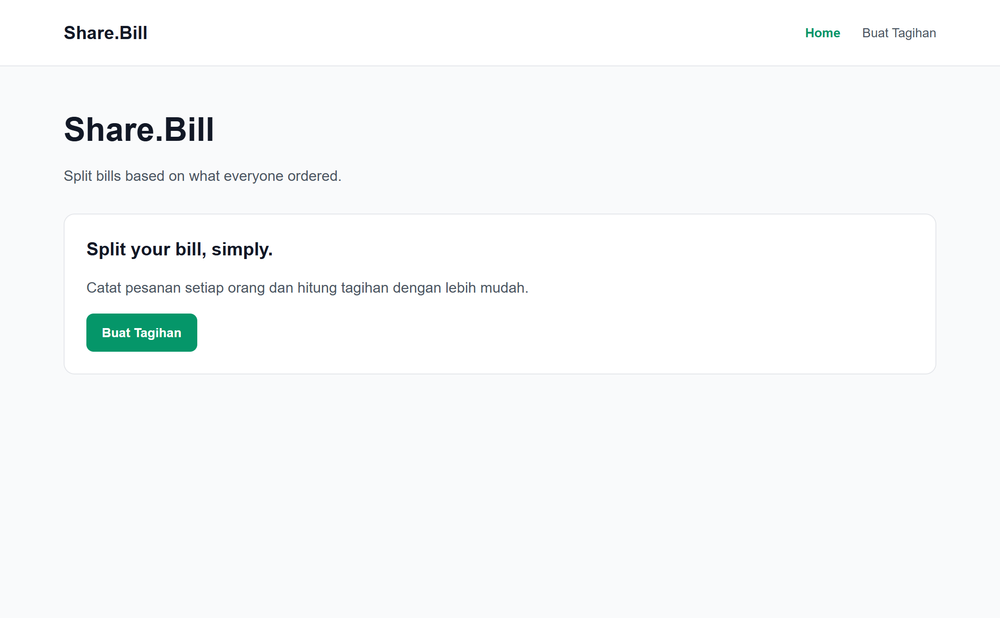
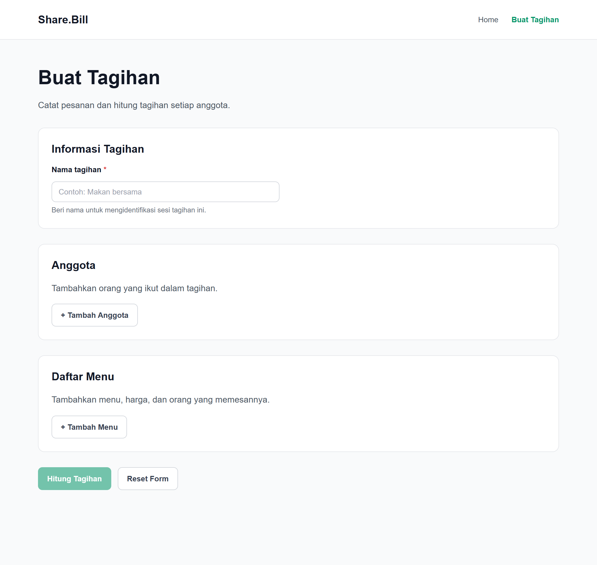
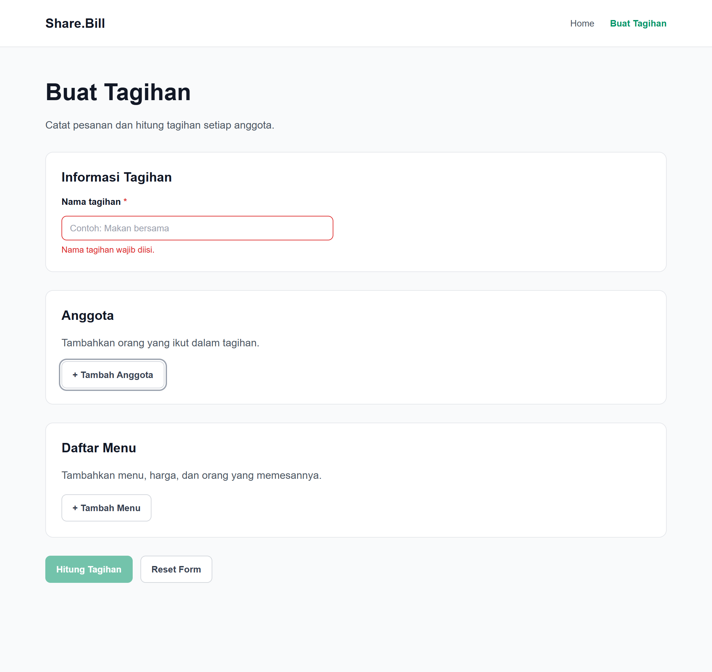

Gambar 4. Tangkapan layar terminal PowerShell saat mengeksekusi npm run lint dan npm run build tanpa error.
Standardisasi Komponen Antarmuka Reusable untuk Proyek Share.Bill
Pengembangan aplikasi berbasis web skala modern menuntut konsistensi visual, efisiensi penulisan kode, serta kemudahan dalam proses pemeliharaan berkelanjutan. Pada pengerjaan Tugas 5b Mata Kuliah Application Project 1 (AP1), Kelompok QWERTY mengimplementasikan sistem Component Library yang berfokus pada pembangunan tiga komponen fondasi antarmuka: Button, Card, dan FormField.
Tujuan utama dari pembuatan component library ini meliputi:
Share.Bill adalah aplikasi Single Page Application (SPA) yang dirancang untuk mempermudah penghitungan pembagian tagihan (split bill) secara transparan dan adil berdasarkan rincian menu yang dipesan oleh setiap individu.
Aplikasi ini dikembangkan dengan arsitektur modern berbasis React 19, TypeScript, Vite 8, dan React Router 8. Aplikasi memiliki alur navigasi client-side yang mencakup halaman Beranda (/), formulir pembuatan tagihan (/create-bill), serta penanganan rute tidak ditemukan (*). Seluruh komponen antarmuka yang dibangun dirancang agar terintegrasi secara modular pada halaman-halaman tersebut.
src/App.css dan src/index.css.
Sistem desain aktual yang menjadi acuan baku dalam perancangan komponen mencakup:
| Token Desain | Nilai / Warna | Penerapan pada Komponen |
|---|---|---|
| Primary Color | #059669 (Emerald Green) |
Latar tombol primary, border fokus input, warna teks brand header. |
| Primary Hover | #047857 (Deep Emerald) |
Transisi hover pada elemen tombol utama (primary button). |
| Neutral Dark | #121826 (Ink Black) |
Warna teks judul (H1, H2, judul kartu), teks label form, dan teks isi input. |
| Neutral Muted | #4b5563 & #6b7280 |
Teks keterangan tubuh, teks bantuan form (helper text), subjudul kartu. |
| Border Color | #e5e7eb & #d1d5db |
Bingkai pembatas kartu (12px radius) dan bingkai default input form (8px radius). |
| Error Color | #dc2626 (Crimson Red) |
Bingkai input status error, teks pesan peringatan error validasi. |
| Background | #f9fafb & #ffffff |
Latar aplikasi dasar (abu terang) dan latar permukaan komponen kartu/input. |
| Tipografi | Arial, Helvetica, sans-serif |
Hirarki font terstandarisasi: Judul (20px bold), Tombol/Input (14px), Helper (13px). |
Berkas sumber: src/components/Button.tsx & src/styles/components.css.
Komponen Button dirancang untuk menangani seluruh aksi interaktif pengguna dengan dukungan variasi tema visual, variasi ukuran, lebar penuh, serta status nonaktif (*disabled*).
| Nama Prop | Tipe Data | Wajib/Opsional | Default | Keterangan |
|---|---|---|---|---|
variant |
'primary' | 'secondary' |
Opsional | 'primary' |
Menentukan varian visual (primary hijau atau secondary putih berbingkai). |
size |
'sm' | 'md' | 'lg' |
Opsional | 'md' |
Menentukan padding dan ukuran font tombol. |
fullWidth |
boolean |
Opsional | false |
Mengubah lebar tombol menjadi 100% dari elemen pembungkus. |
disabled |
boolean |
Opsional | false |
Menonaktifkan interaksi, mengatur opacity 0.55, dan aria-disabled="true". |
type |
'button' | 'submit' | 'reset' |
Opsional | 'button' |
Atribut perilaku tombol HTML. |
children |
React.ReactNode |
Wajib | - | Konten label teks atau elemen di dalam tombol. |
...rest |
ButtonHTMLAttributes |
Opsional | - | Mendukung event handler standar seperti onClick, id, dan title. |
#059669, teks putih. Digunakan pada tombol aksi penting (misal Buat Tagihan).#ffffff, border #d1d5db, teks #374151. Digunakan pada aksi penambahan data.pointer-events: none, opasitas 0.55, kursor not-allowed, dan mencegah eksekusi fungsi onClick.import Button from '../components/Button'
// Tombol Primary (Aksi Utama Navigasi)
<Button variant="primary" type="button">
Buat Tagihan
</Button>
// Tombol Secondary (Aksi Pendukung)
<Button variant="secondary" type="button" onClick={handleAddMember}>
+ Tambah Anggota
</Button>
// Tombol Status Disabled (Kalkulasi Belum Siap)
<Button variant="primary" disabled title="Lengkapi data terlebih dahulu">
Hitung Tagihan
</Button>Batasan: Belum menyediakan animasi spinner otomatis untuk proses asynchronous (*loading state*).
Berkas sumber: src/components/Card.tsx & src/styles/components.css.
Komponen Card berfungsi sebagai kontainer semantik yang membungkus konten dalam satu kesatuan visual yang rapi, dilengkapi dengan header terstruktur untuk judul dan subjudul.
| Nama Prop | Tipe Data | Wajib/Opsional | Default | Keterangan |
|---|---|---|---|---|
title |
React.ReactNode |
Opsional | undefined |
Judul kartu. Jika berupa string, otomatis dibungkus elemen <h2 class="card-title">. |
subtitle |
React.ReactNode |
Opsional | undefined |
Teks keterangan penjelas di bawah judul kartu. |
headerAction |
React.ReactNode |
Opsional | undefined |
Slot tombol aksi di sudut kanan atas header kartu. |
as |
'section' | 'article' | 'div' |
Opsional | 'section' |
Tag semantik HTML yang digunakan sebagai kontainer luar. |
className |
string |
Opsional | '' |
Nama kelas CSS tambahan untuk kebutuhan styling khusus. |
children |
React.ReactNode |
Wajib | - | Konten isi atau elemen tubuh kartu (card body). |
title tidak disertakan.import Card from '../components/Card'
import Button from '../components/Button'
<Card title="Daftar Menu" subtitle="Tambahkan menu, harga, dan orang yang memesan">
<p>Daftar menu pesanan bersama akan tercantum di sini.</p>
<Button variant="secondary" type="button">
+ Tambah Menu
</Button>
</Card>Batasan: Belum memiliki slot terstruktur mandiri untuk footer kartu (misal Card.Footer).
Berkas sumber: src/components/FormField.tsx & src/styles/components.css.
Komponen FormField membungkus elemen input teks lengkap dengan label, indikator wajib (*required asterisk*), deskripsi bantuan (*helper text*), dan pesan galat (*error alert*). Komponen ini secara ketat mematuhi spesifikasi aksesibilitas web WAI-ARIA.
| Nama Prop | Tipe Data | Wajib/Opsional | Default | Keterangan |
|---|---|---|---|---|
label |
string |
Wajib | - | Teks label yang terhubung langsung ke input melalui htmlFor={id}. |
id |
string |
Opsional | useId() |
ID elemen input. Jika tidak diisi, dibuat otomatis via React useId(). |
helperText |
string |
Opsional | undefined |
Teks panduan abu-abu di bawah input, terhubung via aria-describedby. |
error |
string |
Opsional | undefined |
Pesan kesalahan merah dengan role="alert" dan pemicu bingkai merah. |
required |
boolean |
Opsional | false |
Menampilkan tanda bintang merah * dan atribut native required. |
disabled |
boolean |
Opsional | false |
Menonaktifkan input dan memberikan styling latar abu-abu redup. |
labelSuffix |
React.ReactNode |
Opsional | undefined |
Slot elemen tambahan di samping kanan label teks. |
...inputProps |
InputHTMLAttributes |
Opsional | - | Mendukung value, onChange, onBlur, placeholder, dll. |
<label> memiliki atribut htmlFor yang identik dengan atribut id pada tag <input>.error terisi, input otomatis memperoleh atribut aria-invalid="true" dan aria-describedby="{id}-error".role="alert" agar langsung diumumkan kepada pengguna pembaca layar ketika validasi gagal.React.forwardRef agar kompatibel dengan pengelolaan fokus DOM manual maupun form library.import { useState } from 'react'
import FormField from '../components/FormField'
function FormInputBill() {
const [name, setName] = useState('')
const [touched, setTouched] = useState(false)
const isError = touched && name.trim() === ''
return (
<FormField
id="bill-name"
label="Nama tagihan"
placeholder="Contoh: Makan bersama"
value={name}
onChange={(e) => setName(e.target.value)}
onBlur={() => setTouched(true)}
error={isError ? 'Nama tagihan wajib diisi.' : undefined}
helperText={!isError ? 'Beri nama untuk mengidentifikasi sesi tagihan ini.' : undefined}
required
/>
)
}Batasan: Komponen ini dikhususkan untuk elemen <input>; belum mencakup input berjenis dropdown <select> atau <textarea>.
Ketiga komponen reusable telah diterapkan secara nyata pada alur Single Page Application Share.Bill tanpa merusak rute dan fitur PWA yang telah dibangun pada Tugas 5a:
src/pages/Home.tsx)
Menggunakan komponen <Card> untuk membungkus deskripsi pengenalan aplikasi ("Split your bill, simply.") dan komponen <Button variant="primary"> yang dibungkus Link dari React Router untuk navigasi mulus ke rute /create-bill.

src/pages/CreateBill.tsx)
Mengorganisasikan seluruh formulir dalam 3 buah komponen <Card>: Informasi Tagihan (berisi <FormField> normal dengan helper text), Anggota (berisi <Button variant="secondary">), dan Daftar Menu (berisi <Button variant="secondary">).

Ketika pengguna memfokuskan input "Nama tagihan" lalu meninggalkannya dalam keadaan kosong (event onBlur), <FormField> secara reaktif menampilkan bingkai merah dan teks galat "Nama tagihan wajib diisi." dengan role="alert". Di bagian bawah, tombol "Hitung Tagihan" tampil dalam kondisi nonaktif (disabled, opasitas 0.55).

Pengujian dilakukan langsung pada server lokal (http://localhost:4173/) menggunakan browser Google Chrome secara otomatis dan terukur:
| Item Pengujian | Perintah / Metode | Hasil Aktual | Status |
|---|---|---|---|
| Linter Kode | npm run lint |
0 error, 0 warning dari ESLint. Sintaks 100% valid. | BERHASIL |
| Kompilasi TypeScript | npm run build |
Build sukses dalam 393 ms tanpa galat tipe TypeScript. | BERHASIL |
| Navigasi Rute SPA | Klik tombol primary | Berpindah dari / ke /create-bill tanpa reload browser. |
BERHASIL |
| Validasi FormField | Focus lalu blur input | Input kosong berubah berbingkai merah, muncul pesan error role="alert", dan aria-invalid="true". |
BERHASIL |
| State Button Disabled | Event click dispatch | Klik dibatalkan (clickTriggered: false), opasitas 0.55. |
BERHASIL |
| Layout Desktop (1200px) | Emulasi viewport CDP | Konten terpusat dengan lebar 960px, tanpa overflow horizontal. | BERHASIL |
| Layout Mobile (375px) | Emulasi viewport CDP | Konten menciut rapi (343px), padding kartu otomatis 18px. | BERHASIL |
| Integritas PWA (Tugas 5a) | Pengecekan aset build | manifest.json, sw.js, offline.html, dan 4 ikon PNG tetap utuh dan aktif. |
BERHASIL |
FormField difokuskan untuk input teks biasa; belum mendukung format mata uang otomatis (masking Rp) maupun kontrol dropdown <select>.Pengerjaan Tugas 5b: Component Library pada proyek Share.Bill oleh Kelompok QWERTY telah berhasil diselesaikan secara utuh:
Home.tsx dan CreateBill.tsx.
Sesuai instruksi laporan resmi, seluruh tangkapan layar telah diambil langsung dari instans aplikasi lokal dan terminal tanpa ilustrasi palsu atau manipulasi hasil uji. Rincian berkas bukti tangkapan layar yang tersimpan pada folder docs/screenshots/ adalah sebagai berikut:
| Nomor | Nama Berkas | Deskripsi Kondisi yang Ditampilkan |
|---|---|---|
| Gambar 1 | docs/screenshots/01-home.png |
Halaman Beranda (Home): Menampilkan kontainer Card dan Button primary "Buat Tagihan". |
| Gambar 2 | docs/screenshots/02-create-bill-normal.png |
Halaman Buat Tagihan (Kondisi Normal): Menampilkan 3 buah Card, FormField dengan helper text, dan Button secondary. |
| Gambar 3 | docs/screenshots/03-create-bill-error-disabled.png |
Halaman Buat Tagihan (Error & Disabled): Input dengan bingkai merah & alert error, serta Button disabled. |
| Gambar 4 | docs/screenshots/04-terminal-lint-build.png |
Terminal PowerShell: Menampilkan eksekusi riil npm run lint (0 error) dan npm run build (exit code 0). |